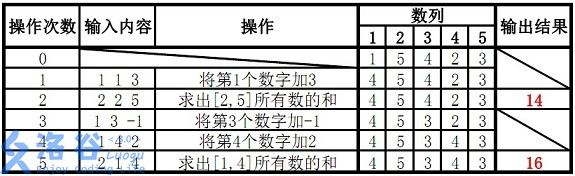

https://www.luogu.com.cn/training/206#problems
【模板】线段树 1
题目描述
如题，已知一个数列，你需要进行下面两种操作：
将某区间每一个数加上
求出某区间每一个数的和。
输入格式
第一行包含两个整数
第二行包含
接下来
1 x y k：将区间2 x y：输出区间
输出格式
输出包含若干行整数，即为所有操作 2 的结果。
样例 #1
样例输入 #1
15 521 5 4 2 332 2 441 2 3 252 3 461 1 5 172 1 4
样例输出 #1
xxxxxxxxxx311128320
提示
对于
对于
对于
保证任意时刻数列中所有元素的绝对值之和
【样例解释】
x1
3using namespace std;6const int N = 2e5 + 10;7
8using LL = long long int;9int n, f;10
11LL w[N];12struct {13 int l, r;14 LL sum, add;15} tr[N * 4];16
17void pushup(int p) {18 tr[p].sum = tr[lc].sum + tr[rc].sum;19}20
21void pushdown(int p) {22 if (tr[p].add) {23 tr[lc].sum += (tr[lc].r - tr[lc].l + 1) * tr[p].add;24 tr[rc].sum += (tr[rc].r - tr[rc].l + 1) * tr[p].add;25 tr[lc].add += tr[p].add;26 tr[rc].add += tr[p].add;27 tr[p].add = 0;28 }29}30
31void build(int p, int l, int r) {32 tr[p] = {l, r, w[l], 0};33 if (l == r) return;34 int m = l + r >> 1;35 build(lc, l, m);36 build(rc, m + 1, r);37 pushup(p);38}39
40void update(int p, int x, int y, int k) {41 if (x <= tr[p].l && tr[p].r <= y) {42 tr[p].sum += k * (tr[p].r - tr[p].l + 1);43 tr[p].add += k;44 return;45 }46 int m = tr[p].l + tr[p].r >> 1;47 pushdown(p);48 if (x <= m)update(lc, x, y, k);49 if (y > m) update(rc, x, y, k);50 pushup(p);51}52
53LL query(int p, int x, int y) {54 if (x <= tr[p].l && tr[p].r <= y) {55 return tr[p].sum;56 }57 int m = tr[p].l + tr[p].r >> 1;58 pushdown(p);59 LL sum = 0;60 if (x <= m) sum += query(lc, x, y);61 if (y > m)sum += query(rc, x, y);62 return sum;63}64
65int main() {66 cin >> n >> f;67 for (int i = 1; i <= n; ++i) {68 cin >> w[i];69 }70 int a, b, c, d;71 build(1, 1, n);72 for (int i = 0; i < f; ++i) {73 cin >> a;74 if (a == 1) {75 cin >> b >> c >> d;76 update(1, b, c, d);77 } else {78 cin >> b >> c;79 cout << query(1, b, c) << endl;80 }81 }82 return 0;83}
B站上讲得非常好的一个视频：
同时也推荐这个UP主（董晓算法），所有视频都非常通透，详略得当，强烈推荐！
UP主页：
【模板】线段树 2
题目描述
如题，已知一个数列，你需要进行下面三种操作：
将某区间每一个数乘上
将某区间每一个数加上
求出某区间每一个数的和
输入格式
第一行包含三个整数
第二行包含
接下来
操作 1 x y k 含义：将区间
操作 2 x y k 含义：将区间
操作 3 x y 含义：输出区间
输出格式
输出包含若干行整数，即为所有操作
样例 #1
样例输入 #1
xxxxxxxxxx715 5 3821 5 4 2 332 1 4 143 2 551 2 4 262 3 5 573 1 4
样例输出 #1
xxxxxxxxxx211722
提示
【数据范围】
对于
对于
对于
除样例外，
（数据已经过加强）
样例说明：

故输出应为
xxxxxxxxxx961
3using namespace std;4const int N = 1e5 + 10;5typedef long long int LL;6int n, m, w[N], p;7struct node {8 int l, r;9 LL sum, add, mul;10} tr[N * 4];11
12void pushup(int u) {13 tr[u].sum = (tr[u << 1].sum + tr[u << 1 | 1].sum) % p;14}15
16void build(int u, int l, int r) {17 if (l == r) {18 tr[u] = {l, r, w[l], 0, 1};19 return;20 }21 tr[u] = {l, r, 0, 0, 1};22 int mid = tr[u].l + tr[u].r >> 1;23 if (l <= mid) build(u << 1, l, mid);24 if (r >= mid + 1) build(u << 1 | 1, mid + 1, r);25 pushup(u);26}27
28void pushdown(int u) {29 tr[u << 1].sum = (tr[u << 1].sum * tr[u].mul + (tr[u << 1].r - tr[u << 1].l + 1) * tr[u].add) % p;30 tr[u << 1].add = (tr[u << 1].add * tr[u].mul + tr[u].add) % p;31 tr[u << 1].mul = (tr[u << 1].mul * tr[u].mul) % p;32 tr[u << 1 | 1].sum = (tr[u << 1 | 1].sum * tr[u].mul + (tr[u << 1 | 1].r - tr[u << 1 | 1].l + 1) * tr[u].add) % p;33 tr[u << 1 | 1].add = (tr[u << 1 | 1].add * tr[u].mul + tr[u].add) % p;34 tr[u << 1 | 1].mul = (tr[u << 1 | 1].mul * tr[u].mul) % p;35 tr[u].add = 0;36 tr[u].mul = 1;37}38
39LL query(int u, int l, int r) {40 if (l <= tr[u].l && tr[u].r <= r) return tr[u].sum % p;41 int mid = tr[u].l + tr[u].r >> 1;42 pushdown(u);43 LL res = 0;44 if (l <= mid) res += query(u << 1, l, r);45 if (r >= mid + 1) res += query(u << 1 | 1, l, r);46 return res % p;47}48
49// *50void modify1(int u, int x, int y, int v) {51 if (x <= tr[u].l && tr[u].r <= y) {52 tr[u].sum = tr[u].sum * v % p;53 tr[u].mul = tr[u].mul * v % p;54 tr[u].add = tr[u].add * v % p;55 return;56 }57 pushdown(u);58 int mid = tr[u].l + tr[u].r >> 1;59 if (x <= mid) modify1(u << 1, x, y, v);60 if (y >= mid + 1) modify1(u << 1 | 1, x, y, v);61 pushup(u);62}63
64// +65void modify2(int u, int x, int y, int v) {66 if (x <= tr[u].l && tr[u].r <= y) {67 tr[u].sum = ((tr[u].r - tr[u].l + 1) * v + tr[u].sum) % p;68 tr[u].add = (tr[u].add + v) % p;69 return;70 }71 pushdown(u);72 int mid = tr[u].l + tr[u].r >> 1;73 if (x <= mid) modify2(u << 1, x, y, v);74 if (y >= mid + 1) modify2(u << 1 | 1, x, y, v);75 pushup(u);76}77
78int main() {79 cin >> n >> m >> p;80 for (int i = 1; i <= n; ++i) scanf("%d", &w[i]);81 build(1, 1, n);82 int a, b, k, op;83 while (m--) {84 scanf("%d%d%d", &op, &a, &b);85 if (op == 1) {86 scanf("%d", &k);87 modify1(1, a, b, k);88 } else if (op == 2) {89 scanf("%d", &k);90 modify2(1, a, b, k);91 } else {92 printf("%lld\n", query(1, a, b));93 }94 }95 return 0;96}导语：本题主要是学习如何维护两个lazytag，如何确定两个lazytag的顺序
作为一道模板题这题太虐心了，然而不得不承认确实在做完之后对于线段树掌握的深入了很多。
首先先说明本题的思路。题目要求有三种操作，两种是不同的在线修改，还有一种是在查询取模后的结果。而这两种操作又是区间乘法和区间加法，我们可以惊喜的发现这两种操作对于取模运算来说都是自由的！但是面对非常大的数据，我们必须思考怎么样用线段树优雅的跑过这道题目。
面对这两种操作，可以联想到线段树的一个非常好的功能就是lazytag，只计算出确实需要访问的区间的真实值，其他的保存在lazytag里面，这样可以近似O(NlogN)的运行起来。在尝试着写了只有一个lazetag的程序之后我们发现一个lazytag是不能够解决问题的，那就上两个，分别表示乘法意义上的lazytag和加法意义上的lazytag。紧接着想到pushdown操作之后我们又发现必须在向下传递lazytag的时候人为地为这两个lazytag规定一个先后顺序，排列组合一下只有两种情况：
加法优先。问题是这样的话非常不容易进行更新操作，假如改变一下
add的数值，mul也要联动变成奇奇怪怪的分数小数损失精度，我们内心是很拒绝的。乘法优先。这样的话假如改变
add的数值就只改变add，改变mul的时候把add也对应的乘一下就可以了，没有精度损失，看起来很不错。
所谓先乘后加就是在做乘法的时候把加法的lazytag也就是add也乘上这个数，在后面做加法的时候直接加就行了。
题解区的一个评论：
其实可以这么理解,这里的
add记录着的是父亲进行所有操作后对儿子产生的需要进行加法的贡献（不需要进行乘法操作），mul记录的是儿子需要进行乘法的贡献,这样先乘后加就很容易理解了
[TJOI2018]数学计算
题目描述
小豆现在有一个数
1 m：将
2 pos：将
输入格式
一共有
对于每一组输入，第一行是两个数字
接下来
输出格式
对于每一个操作，输出一行，包含操作执行后的
样例 #1
样例输入 #1
xxxxxxxxxx1211210 100000000031 242 151 261 1072 382 491 6101 7111 12122 7
样例输出 #1
xxxxxxxxxx10122132420510617684295041084
提示
对于
对于
xxxxxxxxxx541
3using namespace std;4typedef long long int LL;5const int N = 1e5 + 10;6int M, Q;7struct node {8 int l, r;9 LL sum;10} tr[N * 4];11
12void pushup(int u) {13 tr[u].sum = tr[u << 1].sum * tr[u << 1 | 1].sum % M;14}15
16void build(int u, int l, int r) {17 tr[u] = {l, r, 1};18 if (l == r) return;19 else {20 int mid = tr[u].l + tr[u].r >> 1;21 if (l <= mid) build(u << 1, l, mid);22 if (r >= mid + 1) build(u << 1 | 1, mid + 1, r);23 }24}25
26void modify(int u, int x, int v) {27 if (x == tr[u].l && tr[u].l == tr[u].r) tr[u].sum = v;28 else {29 int mid = tr[u].l + tr[u].r >> 1;30 if (x <= mid) modify(u << 1, x, v);31 else modify(u << 1 | 1, x, v);32 pushup(u);33 }34}35
36void solve() {37 cin >> Q >> M;38 memset(tr, 0, sizeof tr);39 build(1, 1, Q);40 int op, t;41 for (int i = 1; i <= Q; ++i) {42 scanf("%d%d", &op, &t);43 if (op == 1) modify(1, i, t);44 else modify(1, t, 1);45 printf("%lld\n", tr[1].sum);46 }47}48
49int main() {50 int t;51 cin >> t;52 while (t--) solve();53 return 0;54}直接模拟会因为爆 long long 的问题导致代码非常复杂，甚至无法编写。
考虑强大的数据结构——线段树。需要建空树，然后操作时向后插入的操作。操作 2 可以看做是把第 t 次的乘数改为 1。每个非叶子节点的值为其左右儿子的值的乘积对 mod 取模的值。
我第一次看这道题，没看出来线段树（没区间没修改没线段……）
直到看了题解：
题目有两个操作，一个是乘一个值，另一个是除之前乘的某个值。转化一下，操作的目的为：改变一个值，查找之前的值。
可以将数据按时间排序，建线段树，维护区间乘。这样的话根节点就是到现在为止的所有数的乘积。
那么第一个操作就是将当前时间的值设为m。
第二个操作是去除某次乘的值，根据乘除逆运算的关系，除一个值就是将那个值置1，可以说是穿越到了从前，防止了乘法运算。
那么第二个操作就是将pos时的值置为1。
明确了操作，还有一些细节。 多组数据，所以线段树不要忘记初始化。 乘法运算，线段树初值设为1。 不要忘记mod运算。
线段树题目：
楼房重建
题目描述
小 A 的楼房外有一大片施工工地，工地上有
为了简化问题，我们考虑这些事件发生在一个二维平面上。小 A 在平面上
施工队的建造总共进行了
输入格式
第一行两个正整数
接下来
输出格式
样例 #1
样例输入 #1
xxxxxxxxxx513 422 433 641 100000000051 1
样例输出 #1
xxxxxxxxxx411213142
提示
对于
xxxxxxxxxx491
3using namespace std;4const int N = 1e5 + 10;5int n, m;6struct node {7 int l, r, cnt;8 double maxx;9} tr[N * 4];10
11void build(int u, int l, int r) {12 tr[u] = {l, r};13 if (l == r) return;14 int mid = tr[u].l + tr[u].r >> 1;15 if (l <= mid) build(u << 1, l, mid);16 if (r >= mid + 1) build(u << 1 | 1, mid + 1, r);17}18
19int query(int u, double maxx) {20 if (tr[u].maxx < maxx) return 0;21 if (tr[u].l == tr[u].r) return tr[u].maxx > maxx;22 if (tr[u << 1].maxx > maxx) return query(u << 1, maxx) + tr[u].cnt - tr[u << 1].cnt;23 if (tr[u << 1].maxx <= maxx) return query(u << 1 | 1, maxx);24}25
26void modify(int u, int x, int y) {27 if (tr[u].l == tr[u].r) {28 tr[u].maxx = y * 1.0 / x;29 tr[u].cnt = 1;30 return;31 }32 int mid = tr[u].l + tr[u].r >> 1;33 if (x <= mid) modify(u << 1, x, y);34 else modify(u << 1 | 1, x, y);35 tr[u].maxx = max(tr[u << 1].maxx, tr[u << 1 | 1].maxx);36 tr[u].cnt = tr[u << 1].cnt + query(u << 1 | 1, tr[u << 1].maxx);37}38
39int main() {40 cin >> n >> m;41 int x, y;42 build(1, 1, n);43 for (int i = 1; i <= m; ++i) {44 scanf("%d%d", &x, &y);45 modify(1, x, y);46 printf("%d\n", tr[1].cnt);47 }48 return 0;49} 显然可以想到进行斜率处理，通过斜率的单调递增来求出cnt
因为区间是固定的，并且发现一个区间内的答案可以通过两个子区间用某种方式进行转移。所以可以考虑到线段树做法。
线段树中只需要维护两个值，一个是区间最大值，还有一个是区间可见的楼房数量cnt的值。cnt表示站在当前区间左端点可以看到的楼房数量。
建树，修改，甚至不用pushdown，一切好说。但是发现pushup不好处理，显然两个子区间的值不能直接合并。必须满足一定关系。
可以发现，区间内的第一项一定在这个序列内，区间最大值也一定在这个序列内。
对于要被pushup的区间，它的两个子区间已经处理好了，容易知道，左儿子区间内可见的楼房一定都在这个大区间内可见。（因为前面形态固定，又不能选择不看到）所以只需要处理右儿子区间和左儿子区间最大值的关系，即可递归处理cnt值。
具体观察代码中的query函数！
如果整个区间的最大值小于传入的最大值，那么直接返回0
如果区间是一个点，那么直接判断该点楼房是否大于传入的最大值，如果是则返回1，反之返回0
如果区间的左子区间的最大值大于传入的最大值，说明该区间的右区间可见的楼房都可以在整个范围内被看到，要加入答案。但是这里注意，并不是返回
tr[u<<1|1].cnt而是返回tr[u].cnt-tr[u<<1].cnt，这两者表示的意思是不一样的。前者表示的是在右子区间内看见的部分，后者表示的是在当前区间内，右子区间可见的部分，意义完全不同。如果区间的左子区间的最大值小于等于传入的最大值，那么直接递归当前区间的右子区间，并返回。
XOR的艺术
题目描述
AKN 觉得第一题太水了，不屑于写第一题，所以他又玩起了新的游戏。在游戏中，他发现，这个游戏的伤害计算有一个规律，规律如下
拥有一个伤害串，是一个长度为
0和字符1的字符串。规定这个字符串的首字符是第一个字符，即下标从给定一个范围
1的个数会修改伤害串中的数值，修改的方法是把
0变成1，将1变成0。
AKN 想知道一些时刻的伤害，请你帮助他求出这个伤害。
输入格式
输入的第一行有两个用空格隔开的整数，分别表示伤害串的长度
输入第二行是一个长度为
第
若
0变成1，1变成0。若
1。
输出格式
对于每次询问，输出一行一个整数，代表区间内 1 的个数。
样例 #1
样例输入 #1
xxxxxxxxxx8110 62101110100130 2 441 1 550 3 761 1 1070 1 481 2 6
样例输出 #1
xxxxxxxxxx3132631
提示
样例输入输出
原伤害串为 1011101001。
对于第一次操作，改变 1100101001。
对于第二次操作，查询 1 的个数，共有
对于第三次操作，改变 1111010001。
对于第四次操作，查询 1 的个数，共有
对于第五次操作，改变 0000010001。
对于第六次操作，查询 1 的个数，共有
数据范围与约定
对于
另有
对于 0 和字符 1。
xxxxxxxxxx801
3using namespace std;4typedef long long int LL;5const int N = 2e5 + 10;6int n, m;7struct node {8 int l, r;9 int sum;10 bool add;// 是否需要往下继续异或11} tr[N * 4];12
13void build(int u, int l, int r) {14 tr[u] = {l, r};15 if (l == r) return;16 int mid = tr[u].l + tr[u].r >> 1;17 if (l <= mid) build(u << 1, l, mid);18 if (r >= mid + 1) build(u << 1 | 1, mid + 1, r);19}20
21void pushup(int u) {22 tr[u].sum = tr[u << 1].sum + tr[u << 1 | 1].sum;23}24
25void pushdown(int u) {26 if (tr[u].add) {27 tr[u << 1].sum = tr[u << 1].r - tr[u << 1].l + 1 - tr[u << 1].sum;28 if (tr[u << 1].add) tr[u << 1].add = false;29 else tr[u << 1].add = true;30 tr[u << 1 | 1].sum = tr[u << 1 | 1].r - tr[u << 1 | 1].l + 1 - tr[u << 1 | 1].sum;31 if (tr[u << 1 | 1].add) tr[u << 1 | 1].add = false;32 else tr[u << 1 | 1].add = true;33 tr[u].add = false;34 }35}36
37void modify(int u, int x, int y) {38 if (x <= tr[u].l && tr[u].r <= y) {39 tr[u].sum = tr[u].r - tr[u].l + 1 - tr[u].sum;40 if (tr[u].add) tr[u].add = false;41 else tr[u].add = true;42 } else {43 pushdown(u);44 int mid = tr[u].l + tr[u].r >> 1;45 if (x <= mid) modify(u << 1, x, y);46 if (y >= mid + 1) modify(u << 1 | 1, x, y);47 pushup(u);48 }49}50
51int query(int u, int l, int r) {52 if (l <= tr[u].l && tr[u].r <= r) {53 return tr[u].sum;54 }55 pushdown(u);56 int mid = tr[u].l + tr[u].r >> 1;57 int res = 0;58 if (l <= mid) res += query(u << 1, l, r);59 if (r >= mid + 1) res += query(u << 1 | 1, l, r);60 return res;61}62
63int main() {64 cin >> n >> m;65 build(1, 1, n);66 string s;67 cin >> s;68 for (int i = 0; i < n; ++i) {69 if (s[i] == '1') {70 modify(1, i + 1, i + 1);71 }72 }73 int op, x, y;74 while (m--) {75 scanf("%d%d%d", &op, &x, &y);76 if (op) printf("%d\n", query(1, x, y));77 else modify(1, x, y);78 }79 return 0;80}首先，由于是区间修改和区间查询，并且数据范围还这么大，所以需要使用线段树来维护。 读入的数都是0或1且修改操作为异或1的话，那么lazytag和线段树的维护就很好想了。
因为0^1=1，1^1=0，所以本题如果对同一个区间连续异或1两次，得到的结果和没有异或是一样的。
如果对于一段区间，长度为len，有n个1，那么就有len-n个0。相应地，对这段区间异或1之后，它的1的个数就变成了len-n。
关于lazytag的更新：原本在每次更新时光关注该如何更新当前线段的sum，而忽略了正确更新lazytag的方式——每次更新lazytag前，应该判断lazytag是否为真，如果是真，则更新为假，如果是假，则更新为真。第一次写代码时，每次更新lazytag都直接赋了true，这导致了严重的错误。
更新lazytag的位置：
pushdown函数modify函数内部直接更新当前线段
【模板】树状数组 1
题目描述
如题，已知一个数列，你需要进行下面两种操作：
将某一个数加上
求出某区间每一个数的和
输入格式
第一行包含两个正整数
第二行包含
接下来
1 x k含义：将第2 x y含义：输出区间
输出格式
输出包含若干行整数，即为所有操作
样例 #1
样例输入 #1
xxxxxxxxxx715 521 5 4 2 331 1 342 2 551 3 -161 4 272 1 4
样例输出 #1
xxxxxxxxxx2114216
提示
【数据范围】
对于
对于
对于
数据保证对于任意时刻，
样例说明：

故输出结果14、16
xxxxxxxxxx361
3using namespace std;4const int N = 5e5 + 10;5
6int n, m, tr[N];7
8int lowbit(int x) {9 return x & -x;10}11
12void add(int x, int y) {13 for (int i = x; i <= n; i += lowbit(i)) tr[i] += y;14}15
16int query(int x) {17 int res = 0;18 for (int i = x; i; i -= lowbit(i)) res += tr[i];19 return res;20}21
22int main() {23 cin >> n >> m;24 for (int i = 1; i <= n; ++i) {25 int x;26 scanf("%d", &x);27 add(i, x);28 }29 while (m--) {30 int k, x, y;31 scanf("%d%d%d", &k, &x, &y);32 if (k == 1) add(x, y);33 else printf("%d\n", query(y) - query(x - 1));34 }35 return 0;36}
【模板】树状数组 2
题目描述
如题，已知一个数列，你需要进行下面两种操作：
将某区间每一个数加上
求出某一个数的值。
输入格式
第一行包含两个整数
第二行包含
接下来
操作 1 x y k 含义：将区间
操作 2 x 含义：输出第
输出格式
输出包含若干行整数，即为所有操作
样例 #1
样例输入 #1
xxxxxxxxxx715 521 5 4 2 331 2 4 242 351 1 5 -161 3 5 772 4
样例输出 #1
xxxxxxxxxx216210
提示
样例 1 解释：
故输出结果为 6、10。
数据规模与约定
对于
对于
对于
xxxxxxxxxx441
3using namespace std;4const int N = 5e5 + 10;5typedef long long int LL;6int n, m;7LL tr[N];8
9int lowbit(int x) {10 return x & -x;11}12
13void add(int x, int y) {14 for (int i = x; i <= n; i += lowbit(i)) tr[i] += y;15 return;16}17
18int query(int x) {19 int res = 0;20 for (int i = x; i; i -= lowbit(i)) res += tr[i];21 return res;22}23
24int main() {25 cin >> n >> m;26 int num;27 for (int i = 1; i <= n; ++i) {28 scanf("%d", &num);29 add(i, num);30 add(i + 1, -num);31 }32 int op, x, y, k;33 while (m--) {34 scanf("%d%d", &op, &x);35 if (op == 1) {36 scanf("%d%d", &y, &k);37 add(x, k);38 add(y + 1, -k);39 } else {40 printf("%lld\n", query(x));41 }42 }43 return 0;44}主要是利用树状数组维护一个差分数组
逆序对
题目描述
猫猫 TOM 和小老鼠 JERRY 最近又较量上了，但是毕竟都是成年人，他们已经不喜欢再玩那种你追我赶的游戏，现在他们喜欢玩统计。
最近，TOM 老猫查阅到一个人类称之为“逆序对”的东西，这东西是这样定义的：对于给定的一段正整数序列，逆序对就是序列中
Update:数据已加强。
输入格式
第一行，一个数
第二行
输出格式
输出序列中逆序对的数目。
样例 #1
样例输入 #1
xxxxxxxxxx21625 4 2 6 3 1
样例输出 #1
xxxxxxxxxx1111
提示
对于
对于
对于所有数据，
请使用较快的输入输出
应该不会
归并排序
xxxxxxxxxx331
3using namespace std;4const int N = 500010;5int a[N];6int tmp[N];7
8unsigned long long int merge_sort(int l, int r) {9 if (l >= r)return 0;10 int mid = r + l >> 1;11 unsigned long long int res = merge_sort(l, mid) + merge_sort(mid + 1, r);12 int i = l, j = mid + 1, k = 0;13 while (i <= mid && j <= r) {14 if (a[i] <= a[j])tmp[k++] = a[i++];15 else {16 tmp[k++] = a[j++];//妙极了 17 res += mid - i + 1;18 }19 }20 while (i <= mid)tmp[k++] = a[i++];21 while (j <= r)tmp[k++] = a[j++];22 for (int i = l, j = 0; i <= r; i++, ++j) a[i] = tmp[j];23 return res;24}25
26int main() {27 int n;28 unsigned long long int sum = 0;29 cin >> n;30 for (int i = 0; i < n; ++i)scanf("%d", &a[i]);31 cout << merge_sort(0, n - 1);32 return 0;33}树状数组
xxxxxxxxxx491
3using namespace std;4typedef long long int LL;5const int N = 5e5 + 10;6int n, a[N], num[N];7vector<int> all;8
9int find(int x) {10 int l = 0, r = all.size() - 1;11 while (l < r) {12 int mid = l + r >> 1;13 if (all[mid] >= x) r = mid;14 else l = mid + 1;15 }16 return l + 1;17}18
19int lowbit(int x) {20 return x & -x;21}22
23void add(int x) {24 for (int i = x; i <= N - 1; i += lowbit(i)) num[i]++;25}26
27int query(int x) {28 int res = 0;29 for (int i = x; i; i -= lowbit(i)) res += num[i];30 return res;31}32
33int main() {34 cin >> n;35 for (int i = 1; i <= n; ++i) {36 scanf("%d", &a[i]);37 all.push_back(a[i]);38 }39 sort(all.begin(), all.end());40 all.erase(unique(all.begin(), all.end()), all.end());41 LL ans = 0;42 for (int i = 1; i <= n; ++i) {43 int id = find(a[i]);44 ans += i - 1 - query(id);// 此时仅仅插入了 i-1 个数字45 add(id);46 }47 cout << ans;48 return 0;49} 树状数组解法在这道题没有归并快，由于我们不仅要排序，还要建树状数组统计，所以，虽然两者复杂度相同，但是树状数组在这里会慢一些。（三倍左右）
Q1: 我们需要知道，怎么统计第 i 个数会与第1~ i−1个数构成多少个逆序对呢?
Ans1：考虑根据值来建树状数组 , 初始树状数组为全 0。现在按照序列从左到右将数据的值对应的位置的数加一，代表又有一个数出现。因此，在循环到第 i 项时，前 i−1 项已经加入到树状数组内了 , 树状数组内比 ai 大的都会与 ai 构成逆序对，因为它们一定出现的更早，所以产生的逆序对数量为 i−query(ai)
注:query(ai): 代表在树状数组内询问 1 ~ ai 项的前缀和
Q2: 根据 ai 来建树状数组空间不够啊？
Ans2：确实不够。但是我们需要的只是数据之间的相对大小，只需要满足大于或小于本身，与大多少无关，
这启发我们对数据离散化，先将数据排序，再用 1 ~ n 分别对应 n 个数表示它们的相对大小，对新的序列建树状数组空间就够了
Q3: 相等的元素是否会导致求解错误？
Ans3：上述代码中相等的元素不会导致错误，但是洛谷题解区很多树状数组的解法都没法很好的解决相同元素导致的错误
注意要使用 long long int 存答案
[NOIP2013 提高组] 火柴排队
题目描述
涵涵有两盒火柴，每盒装有
其中
每列火柴中相邻两根火柴的位置都可以交换，请你通过交换使得两列火柴之间的距离最小。请问得到这个最小的距离，最少需要交换多少次？如果这个数字太大，请输出这个最小交换次数对
输入格式
共三行，第一行包含一个整数
第二行有
第三行有
输出格式
一个整数，表示最少交换次数对
样例 #1
样例输入 #1
xxxxxxxxxx31422 3 1 433 2 1 4
样例输出 #1
xxxxxxxxxx111
样例 #2
样例输入 #2
xxxxxxxxxx31421 3 4 231 7 2 4
样例输出 #2
xxxxxxxxxx112
提示
【输入输出样例说明一】
最小距离是
【输入输出样例说明二】
最小距离是
【数据范围】
对于
对于
对于
对于
xxxxxxxxxx511
3using namespace std;4typedef long long int LL;5const int N = 5e5 + 10, mod = 1e8 - 3;6int n, a[N], b[N], c[N], d[N], q[N], num[N];7
8int lowbit(int x) {9 return x & -x;10}11
12void add(int x) {13 for (int i = x; i <= N - 1; i += lowbit(i)) num[i]++;14}15
16LL query(int x) {17 LL res = 0;18 for (int i = x; i; i -= lowbit(i)) res += num[i];19 return res;20}21
22bool cmp1(int i, int j) {23 return a[i] < a[j];24}25
26bool cmp2(int i, int j) {27 return b[i] < b[j];28}29
30int main() {31 cin >> n;32 for (int i = 1; i <= n; ++i) {33 scanf("%d", &a[i]);34 c[i] = i;35 }36 for (int i = 1; i <= n; ++i) {37 scanf("%d", &b[i]);38 d[i] = i;39 }40 sort(c + 1, c + n + 1, cmp1);41 sort(d + 1, d + n + 1, cmp2);42 for (int i = 1; i <= n; ++i) q[c[i]] = d[i];43 LL ans = 0;44 for (int i = 1; i <= n; ++i) {45 int id = q[i];46 ans = (ans + i - 1 - query(id)) % mod;47 add(id);48 }49 cout << ans;50 return 0;51} 虽然火柴高度是唯一的，但我们不可能直接开一个 INT_MAX大小的数组！很明显，有一个考点：离散化！
回归题目，既然要求找到 min(Σ[(ai-bi)2])，那么我们不妨变形一下，若想使min(Σ[(ai-bi)2])最小，而和式中ai2+bi2是个定值，那么，就只能在 2*aibi 这一项上下文章
那么，我们要取 Σ(ai*bi)的最大值！这样，上述和式min(Σ[(ai-bi)2])的值最小
如何取到最大值？
公式证明：

假设我们现在有离散化后的序列
我们令 q[a[i]]=b[i]，相当于以 a[i] 为关键字对序列 b[i] 排序。
若序列 a 与序列 b 相等，那么此时 q[a[i]] 应该等于 a[i] 的，也就是 q[i]=i
那么也就是说如果我们想让序列 a 与序列 b 相等，那么我们需要让 q 升序排列。
问题就变为，将原本乱的 q 序列升序排列的最少交换次数。
诶，这不就是逆序对吗？
注意：这种题和AcWing上面那个离散化的题目不一样！
AcWing上离散化的题目是离散坐标，本身就是有序的
这道题目是离散位置，本身是无序的，不可以用AcWing上的方法来离散！！！！
注意学习如何离散位置！！！！
[CQOI2006] 简单题
题目描述
有一个
变
例如当
输入格式
第一行包含两个整数
若
输出格式
每个操作
样例 #1
样例输入 #1
xxxxxxxxxx11120 1021 1 1032 642 1251 5 1262 672 1581 6 1691 11 17102 12112 6
样例输出 #1
xxxxxxxxxx6112030405161
提示
对于
对于
树状数组
xxxxxxxxxx411
3using namespace std;4
5const int N = 1e5 + 10;6int n, m;7long long int tr[N];8
9int lowbit(int x) {10 return x & -x;11}12
13void add(int x) {14 for (int i = x; i <= n; i += lowbit(i)) {15 tr[i]++;16 }17}18
19long long int ask(int x) {20 long long int ans = 0;21 for (int i = x; i > 0; i -= lowbit(i)) {22 ans += tr[i];23 }24 return ans;25}26
27int main() {28 cin >> n >> m;29 for (int i = 0; i < m; ++i) {30 int a, b, c;31 cin >> a >> b;32 if (a == 2) {33 cout << ask(b) % 2 << endl;34 } else {35 cin >> c;36 add(b);37 add(c + 1);38 }39 }40 return 0;41}
统计和
题目描述
给定一个长度为
输入格式
第一行
第二行
后面依次是
其中，加入用 x 表示，询问用 y 表示。
x a b 表示在序列上第
y a b 表示询问
输出格式
每行一个正整数，分别是每次询问的结果
样例 #1
样例输入 #1
xxxxxxxxxx615243x 3 84y 1 35x 4 96y 3 4
样例输出 #1
xxxxxxxxxx218217
树状数组维护一个前缀和数组
xxxxxxxxxx401
3using namespace std;4
5const int N = 1e5 + 10;6int n, m;7long long int tr[N];8
9int lowbit(int x) {10 return x & -x;11}12
13void add(int x, int c) {14 for (int i = x; i <= n; i += lowbit(i)) {15 tr[i] += c;16 }17}18
19long long int ask(int x) {20 long long int ans = 0;21 for (int i = x; i > 0; i -= lowbit(i)) {22 ans += tr[i];23 }24 return ans;25}26
27int main() {28 cin >> n >> m;29 for (int i = 0; i < m; ++i) {30 string a;31 int b, c;32 cin >> a >> b >> c;33 if (a == "x") {34 add(b, c);35 } else {36 cout << ask(c) - ask(b - 1) << endl;37 }38 }39 return 0;40}
Agent2
题目背景
炎炎夏日还没有过去，Agent们没有一个想出去外面搞事情的。每当ENLIGHTENED总部组织活动时，人人都说有空，结果到了活动日，却一个接着一个咕咕咕了。只有不咕鸟Lyn_king一个人冒着太阳等了半个多小时，然后居然看到连ENLIGHTENED行动参谋都咕咕咕了，果然咕咕咕是人类的本性啊。
题目描述
作为一个ENLIGHTENED行动指挥，自然不想看到这一点，于是他偷取到了那些经常咕咕咕的Agent的在下来活动安排表，并且叫上了你来整理。在整理过程中，ENLIGHTENED行动指挥对你说了
输入
Agent要咕咕咕。输入
ENLIGHTENED行动指挥询问你根据目前的信息，在第Agent会咕咕咕。
作为同是不咕鸟的你，也想要惩戒那些经常咕咕咕的人，所以，请协助完成ENLIGHTENED行动指挥完成整理，并且在他每次询问时，输出正确的答案。
输入格式
第一行输入两个整数输
输出格式
对于每一次询问的操作，都要输出询问的答案。答案之间用换行隔开。
样例 #1
样例输入 #1
xxxxxxxxxx615 520 1 230 1 541 150 3 561 5
样例输出 #1
xxxxxxxxxx21222
提示
对于
对于
对于
对于
xxxxxxxxxx691
3using namespace std;4
5const int N = 4e5 + 10;6int n, m;7long long int tr[2 * N];8struct node {9 int a, x, y;10} s[N];11vector<int> v;12
13int get(int x) {14 int l = 0, r = v.size() - 1;15 while (l < r) {16 int mid = l + r >> 1;17 if (v[mid] >= x) r = mid;18 else l = mid + 1;19 }20 return l + 1;21}22
23int lowbit(int x) {24 return x & -x;25}26
27void add(int x, int c) {28 // 注意 i<=get(n)29 for (int i = x; i <= get(n); i += lowbit(i)) {30 tr[i] += c;31 }32}33
34long long int ask(int x) {35 long long int ans = 0;36 for (int i = x; i > 0; i -= lowbit(i)) {37 ans += tr[i];38 }39 return ans;40}41
42int main() {43 scanf("%d%d", &n, &m);44 v.push_back(n);45 for (int i = 0; i < m; ++i) {46 scanf("%d", &s[i].a);47 if (s[i].a == 1) {48 cin >> s[i].x;49 v.push_back(s[i].x);50 } else {51 scanf("%d%d", &s[i].x, &s[i].y);52 v.push_back(s[i].x);53 v.push_back(s[i].y);54 }55 }56
57 sort(v.begin(), v.end());58 v.erase(unique(v.begin(), v.end()), v.end());59
60 for (int i = 0; i < m; ++i) {61 if (s[i].a == 1) {62 printf("%lld\n", ask(get(s[i].x)));63 } else {64 add(get(s[i].x), 1);65 add(get(s[i].y) + 1, -1);66 }67 }68 return 0;69}
最接近神的人
题目描述
破解了符文之语，小 FF 开启了通往地下的道路。当他走到最底层时，发现正前方有一扇巨石门，门上雕刻着一幅古代人进行某种活动的图案。而石门上方用古代文写着“神的殿堂”。小 FF 猜想里面应该就有王室的遗产了。但现在的问题是如何打开这扇门……。
仔细研究后，他发现门上的图案大概是说：古代人认为只有智者才是最容易接近神明的。而最聪明的人往往通过一种仪式选拔出来。仪式大概是指，即将隐退的智者为他的候选人写下一串无序的数字，并让他们进行一种操作，即交换序列中相邻的两个元素。而用最少的交换次数使原序列变成不下降序列的人即是下一任智者。
小 FF 发现门上同样有着
输入格式
第一行为一个整数
第二行为
输出格式
一个整数
样例 #1
样例输入 #1
xxxxxxxxxx21422 8 0 3
样例输出 #1
xxxxxxxxxx113
提示
数据范围及约定
对于
对于
样例解释
开始序列为
交换
交换
交换
用树状数组来计算逆序对
xxxxxxxxxx531
3using namespace std;4
5const int N = 5e5 + 10;6int n, a[N], tr[N];7vector<int> v;8
9int get(int x) {10 int l = 0, r = v.size() - 1;11 while (l < r) {12 int mid = l + r >> 1;13 if (v[mid] >= x) r = mid;14 else l = mid + 1;15 }16 return l + 1;17}18
19int lowbit(int x) {20 return x & -x;21}22
23void add(int x) {24 for (int i = x; i <= v.size(); i += lowbit(i)) {25 tr[i]++;26 }27}28
29int ask(int x) {30 int ans = 0;31 for (int i = x; i > 0; i -= lowbit(i)) {32 ans += tr[i];33 }34 return ans;35}36
37int main() {38 cin >> n;39 for (int i = 1; i <= n; ++i) {40 cin >> a[i];41 v.push_back(a[i]);42 }43 sort(v.begin(), v.end());44 v.erase(unique(v.begin(), v.end()), v.end());45 long long int res = 0;46 for (int i = 1; i <= n; ++i) {47 int t = get(a[i]);48 res += (long long int) i - 1 - ask(t);49 add(t);50 }51 cout << res << endl;52 return 0;53}
[USACO18OPEN] Out of Sorts S
题目描述
留意着农场之外的长期职业生涯的可能性，奶牛Bessie开始在不同的在线编程网站上学习算法。
她到目前为止最喜欢的算法是“冒泡排序”。这是Bessie的对长度为
xxxxxxxxxx81sorted = false2while (not sorted):3 sorted = true4 moo5 for i = 0 to N-2:6 if A[i+1] < A[i]:7 swap A[i], A[i+1]8 sorted = false显然，奶牛码中的“moo”指令的作用只是输出“moo”。奇怪的是，Bessie看上去执着于在她的代码中的不同位置使用这个语句。
给定一个输入数组，请预测Bessie的代码会输出多少次“moo”。
输入格式
输入的第一行包含
输出格式
输出“moo”被输出的次数。
样例 #1
样例输入 #1
xxxxxxxxxx6152135435862
样例输出 #1
xxxxxxxxxx114
提示
供题：Brian Dean
xxxxxxxxxx531
3using namespace std;4
5const int N = 1e5 + 10;6int n, a[N], tr[N];7vector<int> v;8
9int get(int x) {10 int l = 0, r = v.size() - 1;11 while (l < r) {12 int mid = l + r >> 1;13 if (v[mid] >= x) r = mid;14 else l = mid + 1;15 }16 return l + 1;17}18
19int lowbit(int x) {20 return x & -x;21}22
23void add(int x) {24 for (int i = x; i <= v.size(); i += lowbit(i)) {25 tr[i]++;26 }27}28
29int ask(int x) {30 int ans = 0;31 for (int i = x; i > 0; i -= lowbit(i)) {32 ans += tr[i];33 }34 return ans;35}36
37int main() {38 cin >> n;39 for (int i = 1; i <= n; ++i) {40 cin >> a[i];41 v.push_back(a[i]);42 }43 sort(v.begin(), v.end());44 v.erase(unique(v.begin(), v.end()), v.end());45 long long int res = 0;46 for (int i = 1; i <= n; ++i) {47 int t = get(a[i]);48 res = max(res, (long long int) i - 1 - ask(t));49 add(t);50 }51 cout << res + 1 << endl;52 return 0;53}注意：这个题并不是寻找数组中的所有逆序对。
本题是寻找对于数组中某一个元素而言，它前面的所有逆序对。
最后答案要加上一，因为一开始无论存不存在逆序对都会检查，也可以理解为排好序之后会再检查一遍。
[eJOI2019] 异或橙子
题目描述
Janez 喜欢橙子！他制造了一个橙子扫描仪，但是这个扫描仪对于扫描的每个橙子的图像只能输出一个
他一共扫描了
Janez 想要分析这些橙子，他觉得异或操作非常有趣，他每次选取一个区间从
例如
注：式子中的
对于两个数的第
例：
输入格式
第一行输入两个正整数
接下来一行
接下来
如果第一个数是
如果第一个数是
输出格式
对于每组询问，输出一行一个非负整数，表示所求的总异或和。
样例 #1
样例输入 #1
xxxxxxxxxx513 321 2 332 1 341 1 352 1 3
样例输出 #1
xxxxxxxxxx21220
样例 #2
样例输入 #2
xxxxxxxxxx815 621 2 3 4 532 1 341 1 352 1 562 4 471 1 182 4 4
样例输出 #2
xxxxxxxxxx412253444
提示
输入输出样例 1 解释
最初，
修改后，第一个位置被修改为
数据规模与约定：
本题采用多测试点捆绑测试，共有 5 个子任务。
Subtask 1(12 points)：
Subtask 2(18 points)：
Subtask 3(25 points)：
Subtask 4(20 points)：
Subtask 5(25 points)：
对于所有数据，
说明
原题来自：eJOI2019 Problem A. XORanges
题面&数据来自：LibreOJ
xxxxxxxxxx481
3using namespace std;4
5const int N = 2e5 + 10;6int n, m, a[N], tr[2][N];7
8int lowbit(int x) {9 return x & -x;10}11
12void update(int x, int y) {13 for (int i = x; i <= n; i += lowbit(i)) {14 tr[x & 1][i] ^= y;15 }16}17
18int ask(int s, int x) {19 int ans = 0;20 for (int i = x; i > 0; i -= lowbit(i)) {21 ans ^= tr[s & 1][i];22 }23 return ans;24}25
26int main() {27 cin >> n >> m;28 for (int i = 1; i <= n; ++i) {29 cin >> a[i];30 update(i, a[i]);31 }32 for (int i = 0; i < m; ++i) {33 int op, x, y;34 cin >> op >> x >> y;35 if (op == 1) {36 update(x, a[x]);37 update(x, y);38 a[x] = y;39 } else {40 if (x % 2 == y % 2) {41 cout << (ask(x, x - 1) ^ ask(x, y)) << endl;42 } else {43 cout << 0 << endl;44 }45 }46 }47 return 0;48}
Holidays
题面翻译
n天假期，安排m个人来浇花，第i个人负责[a[i],b[i]]天，问花是否可以每天都被浇水且不重复。 可以的话输出“OK”，不可以的话输出最早出问题的那天的天号以及那天花被浇了多少次水。
1≤n,m≤100 1≤a[i]≤b[i]≤n b[i]≤a[i+1]
感谢@夜刀神十香ღ 提供的翻译
题目描述
School holidays come in Berland. The holidays are going to continue for
输入格式
The first input line contains two numbers
输出格式
Print "OK" (without quotes), if the schedule does not contain mistakes. Otherwise you have to find the minimal number of a day when the flowers will not be watered or will be watered multiple times, and output two integers — the day number and the number of times the flowers will be watered that day.
样例 #1
样例输入 #1
xxxxxxxxxx6110 521 233 344 657 768 10
样例输出 #1
xxxxxxxxxx11OK
样例 #2
样例输入 #2
xxxxxxxxxx6110 521 232 344 557 869 10
样例输出 #2
xxxxxxxxxx112 2
样例 #3
样例输入 #3
xxxxxxxxxx6110 521 233 345 757 767 10
样例输出 #3
xxxxxxxxxx114 0
提示
Keep in mind that in the second sample the mistake occurs not only on the second day, but also on the sixth day, when nobody waters the flowers. However, you have to print the second day, i.e. the day with the minimal number.
树状数组维护差分数组
xxxxxxxxxx431
3using namespace std;4
5const int N = 110;6int n, m, a[N], b[N];7int tr[N];8
9int lowbit(int x) {10 return x & -x;11}12
13void add(int x, int t) {14 for (int i = x; i <= n; i += lowbit(i)) {15 tr[i] += t;16 }17}18
19int ask(int x) {20 int ans = 0;21 for (int i = x; i > 0; i -= lowbit(i)) {22 ans += tr[i];23 }24 return ans;25}26
27int main() {28 cin >> n >> m;29 for (int i = 1; i <= m; ++i) {30 cin >> a[i] >> b[i];31 add(a[i], 1);32 add(b[i] + 1, -1);33 }34 for (int i = 1; i <= n; ++i) {35 int t = ask(i);36 if (t == 1) continue;37 cout << i << " " << t << endl;38 return 0;39
40 }41 cout << "OK" << endl;42 return 0;43}
[SHOI2009] 会场预约
题目背景
形式化描述
你需要维护一个在数轴上的线段的集合
A l r 表示将
B 查询
对于 A 操作，每次还需输出删掉的元素个数。
题目描述
PP 大厦有一间空的礼堂，可以为企业或者单位提供会议场地。
这些会议中的大多数都需要连续几天的时间（个别的可能只需要一天），不过场地只有一个，所以不同的会议的时间申请不能够冲突。也就是说，前一个会议的结束日期必须在后一个会议的开始日期之前。所以，如果要接受一个新的场地预约申请，就必须拒绝掉与这个申请相冲突的预约。
一般来说，如果 PP 大厦方面事先已经接受了一个会场预约（例如从
不过，有时出于经济利益，PP 大厦方面有时会为了接受一个新的会场预约，而拒绝掉一个甚至几个之前预订的预约。 于是，礼堂管理员 QQ 的笔记本上经常记录着这样的信息：（本题中为方便起见，所有的日期都用一个整数表示）例如，如果一个为期
最近，这个业务的工作量与日俱增，礼堂的管理员 QQ 希望参加 SHTSC 的你替他设计一套计算机系统，方便他的工作。这个系统应当能执行下面两个操作：
A 操作：有一个新的预约是从
B 操作：请你的系统返回当前的仍然有效的预约的总数。
输入格式
第一行一个正整数
接下来
输出格式
输出
样例 #1
样例输入 #1
xxxxxxxxxx7162A 10 153A 17 194A 12 175A 90 996A 11 127B
样例输出 #1
xxxxxxxxxx6102032405162
提示
【数据范围】
对于
一个非常简单的STL做法（非常好想，代码很短）
xxxxxxxxxx391
3using namespace std;4int n;5
6struct node {7 int l, r;8
9 bool operator<(const node &w) const {10 return r < w.l;11 }12};13
14set<node> s;15
16int main() {17 cin >> n;18 char c;19 int a, b;20 for (int i = 0; i < n; ++i) {21 cin >> c;22 if (c == 'A') {23 cin >> a >> b;24 struct node temp = (node) {a, b};25 int tot = 0;26 auto t = s.find(temp);27 while (t != s.end()) {28 tot++;29 s.erase(t);30 t = s.find(temp);31 }32 cout << tot << endl;33 s.insert(temp);34 } else {35 cout << s.size() << endl;36 }37 }38 return 0;39}题意已经暗示的很明确要你使用平衡树了，但我不会平衡树
首先考虑A操作，由于STL的set有相同元素只保留一个的特性，因此我们不难想到令有冲突的预约相等，这样我们就可以很方便的用.find()这个函数来完成A操作了。
怎么令它们相等呢？
其实也很简单，由于使用自定义数据类型的set要重载运算符，因此我们可以这样：
xxxxxxxxxx71struct node {2 int l, r;3
4 bool operator<(const node &w) const {5 return r < w.l;6 }7};这样对于两个node类型的结构体a，b来说，a<b就代表a完全在b的左边，a>b就代表a完全在b的右边，a==b就代表a与b有冲突(有重叠部分)。
等于的定义是
a < b == false && b < a == false，太妙了
对于B操作，直接输出set里元素的个数就好了。
本题另外一种用树状数组的做法
xxxxxxxxxx591
3using namespace std;4const int N = 1e5 + 10;5int n, tr[N], endd[N], ans, del;6
7int lowbit(int x) {8 return x & -x;9}10
11void add(int x, int c) {12 for (int i = x; i <= N; i += lowbit(i)) {13 tr[i] += c;14 }15}16
17int ask(int x) {18 int res = 0;19 for (int i = x; i >= 1; i -= lowbit(i)) {20 res += tr[i];21 }22 return res;23}24
25int main() {26 cin >> n;27 char c;28 int st, ed;29 for (int i = 0; i < n; ++i) {30 cin >> c;31 if (c == 'A') {32 del = 0;33 cin >> st >> ed;34 for (int p; (p = ask(ed));) {35 int l = 0, r = ed;36 while (l < r) {37 int mid = l + r + 1 >> 1;38 if (ask(mid) < p) l = mid;39 else r = mid - 1;40 }41 ++l;42 if (endd[l] >= st) {43 ans--;44 del++;45 add(l, -1);46 } else {47 break;48 }49 }50 add(st, 1);51 ans++;52 endd[st] = ed;53 cout << del << endl;54 } else {55 cout << ans << endl;56 }57 }58 return 0;59} 注意这个二分写法
xxxxxxxxxx71int l = 0, r = ed;2while (l < r) {3 int mid = l + r + 1 >> 1;4 if (ask(mid) < p) l = mid;5 else r = mid - 1;6}7++l;if中间只能是<进行判断，不可以用<=，不然会出错，想想为什么？（提示：树状数组的性质）
二分完成之后要将l增加1，想想为什么？（提示：树状数组的性质）
守墓人
题目背景
在一个荒凉的墓地上，有一个令人尊敬的守墓人， 他看守的墓地从来没有被盗过， 所以人们很放心的把自己的先人的墓安顿在他那
守墓人能看好这片墓地是必然而不是偶然……
因为……守墓人懂风水 0.0
题目描述
他把墓地分为主要墓碑和次要墓碑， 主要墓碑只能有
而每个墓碑有一个初始的风水值，这些风水值决定了墓地的风水的好坏，所以守墓人需要经常来查询这些墓碑。
善于运用风水的守墓人，通过一次次逆天改命，使得自己拥有了无限寿命，没人知道他活了多久。这天，你幸运的拜访到了他，他要求你和他共同见证接下来几年他的战果，但不过他每次统计风水值之和都需要你来帮他计算，算错了他会要你命 QAQ
风水也不是不可变，除非遭遇特殊情况，已知在接下来的
将
2.将主墓碑的风水值增加
3.将主墓碑的风水值减少
4.统计
5.求主墓碑的风水值
上面也说了，很多人会把先人的墓安居在这里，而且守墓人活了很多世纪→_→，墓碑的数量会多的你不敢相信= =
守墓人和善的邀请你帮他完成这些操作，要不然哪天你的旅馆爆炸了，天上下刀子.....
为了活命，还是帮他吧
输入格式
第一行，两个正整数
第二行，
接下来
输出格式
输出会有若干行，对
样例 #1
样例输入 #1
xxxxxxxxxx915 720 0 0 0 031 1 5 141 1 3 352 363 174 1 582 195
样例输出 #1
xxxxxxxxxx211627
提示
线段树板子题
xxxxxxxxxx901
3using namespace std;6const int N = 2e5 + 10;7
8using LL = long long int;9int n, f;10LL w[N];11struct {12 int l, r;13 LL sum, add;14} tr[N * 4];15
16void pushup(int p) {17 tr[p].sum = tr[lc].sum + tr[rc].sum;18}19
20void pushdown(int p) {21 if (tr[p].add) {22 tr[lc].sum += (tr[lc].r - tr[lc].l + 1) * tr[p].add;23 tr[rc].sum += (tr[rc].r - tr[rc].l + 1) * tr[p].add;24 tr[lc].add += tr[p].add;25 tr[rc].add += tr[p].add;26 tr[p].add = 0;27 }28}29
30void build(int p, int l, int r) {31 tr[p] = {l, r, w[l], 0};32 if (l == r) return;33 int m = l + r >> 1;34 build(lc, l, m);35 build(rc, m + 1, r);36 pushup(p);37}38
39void update(int p, int x, int y, int k) {40 if (x <= tr[p].l && tr[p].r <= y) {41 tr[p].sum += k * (tr[p].r - tr[p].l + 1);42 tr[p].add += k;43 return;44 }45 int m = tr[p].l + tr[p].r >> 1;46 pushdown(p);47 if (x <= m)update(lc, x, y, k);48 if (y > m) update(rc, x, y, k);49 pushup(p);50}51
52LL query(int p, int x, int y) {53 if (x <= tr[p].l && tr[p].r <= y) {54 return tr[p].sum;55 }56 int m = tr[p].l + tr[p].r >> 1;57 pushdown(p);58 LL sum = 0;59 if (x <= m) sum += query(lc, x, y);60 if (y > m)sum += query(rc, x, y);61 return sum;62}63
64int main() {65 cin >> n >> f;66 for (int i = 1; i <= n; ++i) {67 cin >> w[i];68 }69 int a, b, c, d;70 build(1, 1, n);71 for (int i = 0; i < f; ++i) {72 cin >> a;73 if (a == 1) {74 cin >> b >> c >> d;75 update(1, b, c, d);76 } else if (a == 2) {77 cin >> b;78 update(1, 1, 1, b);79 } else if (a == 3) {80 cin >> b;81 update(1, 1, 1, 0 - b);82 } else if (a == 4) {83 cin >> b >> c;84 cout << query(1, b, c) << endl;85 } else {86 cout << query(1, 1, 1) << endl;87 }88 }89 return 0;90}
[USACO04OPEN] MooFest G 加强版
题目描述
每一年，约翰的
现在
输入格式
第
接下来
输出格式
输出一个数，代表这
样例 #1
样例输入 #1
xxxxxxxxxx51423 132 542 654 3
样例输出 #1
xxxxxxxxxx1157
提示
数据范围
因为原数据下
原数据作为子任务
子任务
子任务
维护两个树状数组
xxxxxxxxxx701
3using namespace std;4const int N = 5e4 + 10;5const int M = 1e6 + 10;6using LL = long long int;7int n;8int tr1[M];// 比当前小的个数 9LL tr2[M];// 比当前位置小的距离总和 10
11struct node {12 LL v, x;13
14 bool operator<(const node &y) const {15 return v < y.v;16 }17} a[N];18
19int lowbit(int x) {20 return x & -x;21}22
23void up1(int x, int y) {24 for (int i = x; i <= M; i += lowbit(i)) {25 tr1[i] += y;26 }27}28
29void up2(int x, int y) {30 for (int i = x; i <= M; i += lowbit(i)) {31 tr2[i] += y;32 }33}34
35int ask1(int x) {36 int res = 0;37 for (int i = x; i >= 1; i -= lowbit(i)) {38 res += tr1[i];39 }40 return res;41}42
43LL ask2(int x) {44 LL res = 0;45 for (int i = x; i >= 1; i -= lowbit(i)) {46 res += tr2[i];47 }48 return res;49}50
51int main() {52 cin >> n;53 for (int i = 1; i <= n; ++i) {54 cin >> a[i].v >> a[i].x;55 }56 sort(a + 1, a + 1 + n);57 LL ans = 0;58 LL summ = 0;// 当前点之前所有点距离之和 59 for (int i = 1; i <= n; ++i) {60 int num = ask1(a[i].x);61 LL sum = ask2(a[i].x);// 比当前位置小的距离总和 62 ans += (LL) (num * a[i].x - sum) * a[i].v;63 ans += (LL) (summ - sum - (i - num - 1) * a[i].x) * a[i].v;64 up1(a[i].x, 1);65 up2(a[i].x, a[i].x);66 summ += a[i].x;67 }68 cout << ans << endl;69 return 0;70}这道题非常的妙啊！值得细细品一下：
按照v从小到大排序即可避免计算
通过维护两个树状数组可以在nlogn时间复杂度下计算
tr1查询比自己当前距离小的点的数量tr2查询比自己当前距离小的点的距离之和
x还要小的点对答案的贡献
x大的点对答案的贡献
如果在结构体里面不用long long int，则计算num * a[i].x的时候可能会爆int
三元上升子序列
题目描述
Erwin 最近对一种叫 thair 的东西巨感兴趣。。。
在含有 thair当且仅当
求一个序列中 thair 的个数。
输入格式
开始一行一个正整数
以后一行
输出格式
一行一个整数表示 thair 的个数。
样例 #1
样例输入 #1
xxxxxxxxxx21422 1 3 4
样例输出 #1
xxxxxxxxxx112
样例 #2
样例输入 #2
xxxxxxxxxx21521 2 2 3 4
样例输出 #2
xxxxxxxxxx117
提示
样例2 解释
thair 分别是：
1 2 3
1 2 4
1 2 3
1 2 4
1 3 4
2 3 4
2 3 4
数据规模与约定
对于
对于
对于
两个树状数组计算比当前位置小的点数和比当前位置大的点数
xxxxxxxxxx451
3using namespace std;4const int N = 1e5 + 10;5int n, tr[N], a[N], small[N], big[N];6
7int lowbit(int x) {8 return x & -x;9}10
11int ask(int x) {12 int res = 0;13 for (int i = x; i >= 1; i -= lowbit(i)) {14 res += tr[i];15 }16 return res;17}18
19void update(int x, int y) {20 for (int i = x; i <= N; i += lowbit(i)) {21 tr[i] += y;22 }23}24
25int main() {26 cin >> n;27 for (int i = 1; i <= n; ++i) {28 cin >> a[i];29 }30 for (int i = 1; i <= n; ++i) {31 small[i] = ask(a[i] - 1);32 update(a[i], 1);33 }34 memset(tr, 0, sizeof tr);35 for (int i = n; i >= 1; --i) {36 big[i] = n - i - ask(a[i]);37 update(a[i], 1);38 }39 long long int ans = 0;40 for (int i = 1; i <= n; ++i) {41 ans += (long long int) small[i] * big[i];42 }43 cout << ans << endl;44 return 0;45}
[USACO17JAN] Promotion Counting P
题目描述
奶牛们又一次试图创建一家创业公司，还是没有从过去的经验中吸取教训——牛是可怕的管理者！
为了方便，把奶牛从
所有的第
不幸地是，奶牛们发现经常发生一个上司比她的一些下属能力低的情况，在这种情况下，上司应当考虑晋升她的一些下属。你的任务是帮助奶牛弄清楚这是什么时候发生的。简而言之，对于公司的中的每一头奶牛
输入格式
输入的第一行包括一个整数
接下来的
接下来的
输出格式
输出包括
样例 #1
样例输入 #1
xxxxxxxxxx101528042893843846930887468169277857146369166957747794718192103
样例输出 #1
xxxxxxxxxx51220314050
提示
对于
树状数组+DFS
xxxxxxxxxx621
3using namespace std;4const int N = 1e5 + 10;5vector<int> e[N];6vector<int> q;7int n, a[N], ans[N], tr[N];8
9int lowbit(int x) {10 return x & -x;11}12
13int ask(int x) {14 int res = 0;15 for (int i = x; i >= 1; i -= lowbit(i)) {16 res += tr[i];17 }18 return res;19}20
21void update(int x, int y) {22 for (int i = x; i <= N - 1; i += lowbit(i)) {23 tr[i] += y;24 }25}26
27int get(int x) {28 int l = 0, r = q.size() - 1;29 while (l < r) {30 int mid = l + r >> 1;31 if (x <= q[mid]) r = mid;32 else l = mid + 1;33 }34 return l + 1;35}36
37void dfs(int x) {38 ans[x] -= ask(N - 1) - ask(get(a[x]));39 for (int i: e[x]) {40 dfs(i);41 }42 ans[x] += ask(N - 1) - ask(get(a[x]));43 update(get(a[x]), 1);44}45
46int main() {47 cin >> n;48 for (int i = 1; i <= n; ++i) {49 cin >> a[i];50 q.push_back(a[i]);51 }52 for (int i = 2; i <= n; ++i) {53 int l;54 cin >> l;55 e[l].push_back(i);56 }57 sort(q.begin(), q.end());58 q.erase(unique(q.begin(), q.end()), q.end());59 dfs(1);60 for (int i = 1; i <= n; ++i) cout << ans[i] << endl;61 return 0;62}首先要注意下离散化。
本题是DFS和树状数组的结合，非常巧妙。
在DFS过程中，先查一次比自己大的点的数量有多少，在遍历完所有的子节点之后，再查一下比自己大的点的数量有多少，这样就可以统计出来子节点中比自己大的点的数量有多少。这种DFS和树状数组配合的方式也完美避开了在树上进行树状数组的尴尬，比如一头奶牛不是这个点的下属，但是也很容易因为P值大而被统计进去。